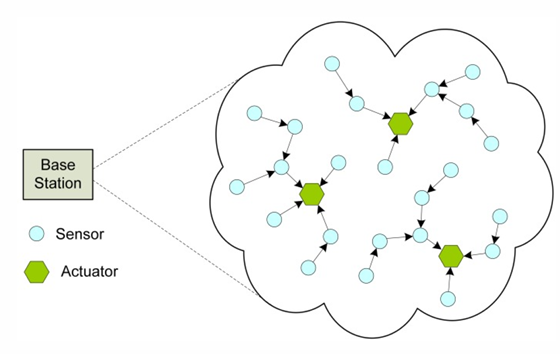

LLN
Low-power communication → typically wireless and lossy
- depends also on external factors like wether conditions
LLN: a network composed by many embedded devices with limited power, memory and processing resources, interconnected through wired/wireless link
- communication tech like: IEE 802.15.4, BLE or low-power WI-FI
LLNs often exhibit considerable packet loss, significant variability in the delivery rate, and some short-term unreliability (environmental conditions)
- limited and unpredictable bandwidth
Constrains on nodes:
- low power
- limited memory
- scarce processing resources
Constrains on network:
- lossy → shared communication medium → collision
- limited and unpredictable bandwidth
- dynamic topology (maybe some nodes shut down or are unreachable)
Communication Patterns
Sensors acquire infos, send them to the base station and then take a decision to send the actuators
- typically one-to-many or one-to-one (actuators) and many-to-one (sensors)
{kind=link}

One-to-One
The standard in the internet
- typically not direct due to power limitation, intermediate nodes in the communication

Many-to-One
The most frequent in sensor nodes
- sink node can be a gateway that connect it to the internet, or data repository

One-to-Many
When you need to send commands in smart objects

Sensor Networks
Sensor nodes integrate three different capabilities:
- sensing
- computing
- communication

It can be considered as a distributed sensing infrastructure
- Sensor nodes sense physical information
- process the data locally
- and/or send them to one or more collection points
- Typically many-to-one
WSN classification
Wireless Sensor Networks
- Static WSN → location of nodes doesn’t change over time (stationary)
- Quasi-static WSN → some nodes have limited mobility (not continously, sporadically)
- Mobile WSN → a large part of nodes are mobile
- mobility can be in the sink (excange data when really close)
Network Density Classification
- Dense WSN
- The distance between neighboring nodes is below the transmission range → needs to consider worst case conditions, otherwise in rainy day I can’t communicate
- High density, large number of sensor nodes → very expensive
- Sparse WSN
- The distance between neighboring nodes is much larger than the transmission range
- typically using approaches like mobile nodes to collect data → less expensive
- when monitoring a city, I already have mobile nodes
Data collection Paradigm
- Multi-hop communication → used in dense network, every node communicate with the intermidiate nodes until the sink
- no need for mobile collectors
- flat organization of nodes or hierarchical
- Mobile Data Collectors
- both for sparse or dense sensor networks
- the mobile part bring additional costs
- time for communication is limited

Flat Multi-hop organization
- Dense network
- typically long paths
- large sensor-to-sink delay
- low reliability → because a very long path, each link has a success probility
- high energy consumption at each communication hop

- funneling effect: all messagges originated in the network must pass to the node near the sink → consume much more energy and it will exhaust the battery before the others
Hierarchical Multi-hop
There are special nodes (defined artificially), in order to define an hierarchical organization → form clusters
- The special nodes have larger batteries, or connected to the electrical grid
- They may use long range technologies to trasmit between them or the sink

- short paths → limited delay, more reliable, no funneling (no power costraint)
- If a super node failes I need to reconfigure the entire system
- Additional cost to pay for super nodes (that are not actually needed to sense data)
Applications
Key domains include environmental monitoring (air quality, noise), alert systems (fire, floods), precision agriculture (soil sensors), tracking (vehicles, animals), smart healthcare (remote monitoring), smart factories (predictive maintenance), smart buildings (energy management), and smart cities (traffic control, parking guidance).
Challenges in Sensor Networks
- Sensor networks require protocol customization for different applications with varying Quality of Service (QoS) requirements
- Unlike traditional networks where humans generate predictable traffic patterns, sensor networks respond to environmental events - creating unpredictable, bursty data flows
- The main problem is energy efficiency
- sensor nodes are prone to failures: frequent topology changes due to failures, energy limitations, mobility, …
- Traditional networks focus on individual messages between specific users. Sensor networks prioritize aggregate data patterns → Data-Centric vs User-Centric

In traditional networks layers only communicate with adjacents ones → inefficient abstraction
- Application layer should monitor physical layer conditions and adaptively reduce message generation when connectivity is poor, preventing futile energy expenditure.
- Otherwise an infinite cycle of retrasmission is performed
Cross Layering
Each layer can exploit infos made available from other layers
- optimize the performance of the overall system
In traditional internet we use layering because we want to:
- manage complexity (divide and conquer)
- modularity → can change protocol independently in each layer

We have a repository where each layer store infos about its layer
Or we could implement everything in a single layer, but we loose modularity